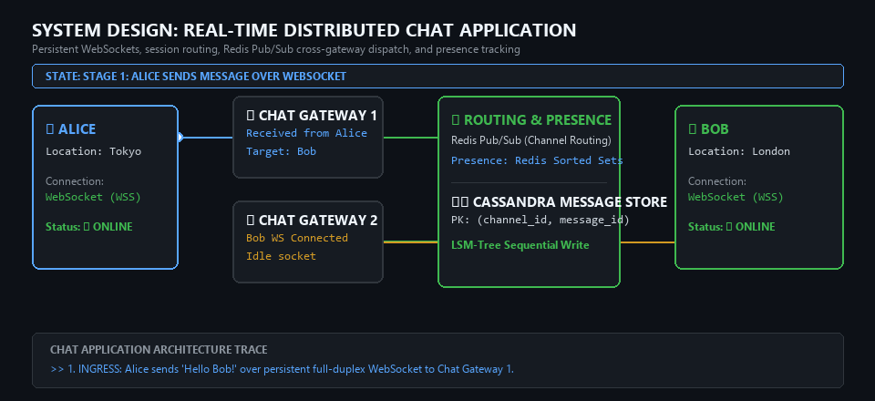

23 - System Design: Real-Time Distributed Chat App (WhatsApp / Discord)
Executive Summary: Designing a global real-time chat application (like WhatsApp, Discord, or Slack) requires orchestrating millions of persistent, full-duplex WebSocket connections, maintaining a high-throughput Presence Service (Online/Offline status), routing messages across distributed gateway clusters via a low-latency pub/sub message broker, storing petabytes of chat history in wide-column LSM-tree storage (Apache Cassandra / ScyllaDB), and falling back to APNs/FCM mobile push notifications for offline users.
🏢 Real-World Deep Dives: Detailed case studies of how Google & Netflix implement this in production are documented in REAL_WORLD_EXAMPLES.md.
⏱️ Prerequisites: What You Need to Know First
To get the most out of this module, make sure you understand:
- 01 - Client-Server Networking: WebSockets vs. HTTP long-polling vs. SSE.
- 06 - Relational & Non-Relational Databases: Wide-column NoSQL stores vs. relational tables.
- 17 - Message Queues & Distributed Logs: Pub/Sub routing and asynchronous messaging.
- 20 - Fault Tolerance & Resilience: Connection pooling, heartbeats, and fail-fast patterns.
🧒 The 30-Second Version (ELI5)
Imagine you and your friend are talking over two-way walkie-talkies:
- When you speak, sound travels instantaneously over the open radio frequency (WebSocket). You don't hang up the phone and redial every time you say a single sentence!
- If your friend is in another country, your walkie-talkie signal beams to a local radio tower (Chat Gateway), which zips the message through an underground fiber optic cable (Message Broker) to your friend's local radio tower.
- If your friend's walkie-talkie is turned off (Offline), the central post office writes your message down in an envelope, slips it into their mailbox (Message Store), and taps on their window with a postcard (Push Notification).
🍕 Everyday Analogy
| Chat System Component | Walkie-Talkie & Dispatch Analogy | Technical Reality in Discord / WhatsApp |
|---|---|---|
| WebSocket Connection | Holding open a persistent walkie-talkie channel | Full-duplex bidirectional TCP connection (RFC 6455) |
| Chat Gateway Server | Local radio dispatch tower managing 50,000 radios | Stateful edge gateway holding open client socket descriptors |
| Message Broker | High-speed pneumatic tubes connecting dispatch towers | Redis Pub/Sub, Apache Kafka, or RabbitMQ cluster |
| Presence Service | The tower's status board showing which radios are transmitting | In-memory Redis Sorted Sets updated via 10-second heartbeats |
| Message History Store | Permanent bound filing cabinets with timestamped transcripts | Apache Cassandra / ScyllaDB wide-column store |
| Push Notification | Ringing the recipient's home doorbell when radio is turned off | Apple APNs / Google Firebase Cloud Messaging (FCM) |
🧩 The Problem It Solves
Why Traditional HTTP Fails for Real-Time Chat
In classic HTTP request-response:
- The client must always initiate communication; the server cannot push data to the client.
- Polling (
setInterval(fetch, 1000)): Creates massive wasted traffic—$99%$ of requests return empty responses, wasting bandwidth and exhausting server CPU. - HTTP Long-Polling: Holds connection open until a message arrives. However, every new message requires tearing down the TCP connection, doing a new TLS handshake, and sending heavy HTTP headers ($500\text{–}1,000\text{ bytes}$ of header overhead for a $10\text{-byte}$ message!).
How WebSockets Revolutionize Real-Time Scale
- Persistent Bi-directional Socket: Initiated via an HTTP Upgrade handshake, then converts to a lightweight framed binary protocol over TCP.
- Minimal Framing Overhead: Frame headers are only $2\text{ to }10\text{ bytes}$ per message.
- Instantaneous Server Push: The server pushes messages directly into the client's open socket with zero polling delay ($<5\text{ ms}$).
🖼️ Picture It: Architecture & Flow
High-Resolution Chat App Animation
Below is an animated trace of cross-gateway message routing between Alice and Bob via Redis Pub/Sub, with Cassandra history persistence:

End-to-End Chat Architecture Flowchart
sequenceDiagram
autonumber
actor Alice as 👤 Alice (Tokyo)
participant GW1 as ⚡ Chat Gateway 1
participant Presence as 📡 Presence Service (Redis)
participant Broker as 📜 Redis Pub/Sub / Kafka
participant GW2 as ⚡ Chat Gateway 2
actor Bob as 👤 Bob (London)
participant DB as 🗄️ Cassandra Message Store
Alice->>GW1: Send: "Hello Bob!" (over WebSocket)
GW1->>DB: 1. Persist message (channel_id, timestamp)
GW1->>Presence: 2. Query Bob's location
Presence-->>GW1: Bob is on 'GW-London-02'
rect rgb(22, 27, 34)
Note over GW1, GW2: Cross-Gateway Real-Time Dispatch
GW1->>Broker: 3. Publish to channel 'user:bob'
Broker->>GW2: 4. Route frame to GW-London-02
GW2->>Bob: 5. Push frame over active WebSocket (5ms)
end
Bob-->>GW2: Read ACK
GW2->>Alice: Delivery Receipt: DELIVERED (✓✓)
🔢 Walk-Through with Real Numbers
Let's model capacity planning for a platform with 50 Million Daily Active Users (DAU):
1. Concurrency & Throughput Math
- Peak Concurrent Connections: Assume 20% of DAU are connected simultaneously at peak: $$\text{Concurrent WebSockets} = 50,000,000 \times 0.20 = \mathbf{10,000,000\text{ active connections}}$$
- Message Volume: Assume average active user sends 40 messages per day: $$\text{Total Daily Messages} = 50,000,000 \times 40 = \mathbf{2\text{ Billion messages/day}}$$
- Average QPS: $$\text{QPS} = \frac{2,000,000,000}{86,400} \approx \mathbf{23,150\text{ msgs/sec}}$$ $$\text{Peak QPS (3x)} \approx \mathbf{70,000\text{ msgs/sec}}$$
2. Gateway Server Fleet Sizing
A high-performance Linux server running modern Erlang/Go/Node with tuned epoll and file-max can comfortably hold $100,000$ open idle WebSocket connections:
- Memory per open WebSocket connection (OS TCP buffer + app struct): $\approx 10\text{ KB}$.
- RAM for 100k connections: $100,000 \times 10\text{ KB} \approx 1\text{ GB of RAM}$.
- Servers needed to hold 10M concurrent connections: $$\text{Gateways Needed} = \frac{10,000,000}{100,000} = \mathbf{100\text{ Chat Gateway instances}}$$
3. Storage Estimations (5-Year Horizon)
- Average message size: $100\text{ bytes}$ text + $60\text{ bytes}$ metadata = $160\text{ bytes}$.
- Daily storage: $2\text{ Billion} \times 160\text{ bytes} \approx 320\text{ GB/day}$.
- 5-year storage: $$\text{Storage (5 Years)} = 320\text{ GB} \times 365 \times 5 \approx \mathbf{584\text{ Terabytes}}$$ 584 TB fits cleanly in a multi-node Apache Cassandra or ScyllaDB cluster.
⚙️ How It Works Under the Hood
1. Transport Comparison
| Protocol | Connection Type | Header Overhead | Latency | Suitability for Chat |
|---|---|---|---|---|
| HTTP Polling | Short-lived request/response | Enormous (~800 bytes/req) | Terrible (tied to poll interval) | ❌ Unusable at scale |
| Long-Polling | Request held until data arrives | High (~800 bytes per msg) | Medium (~100–300 ms) | Legacy fallback only |
| Server-Sent Events (SSE) | Persistent half-duplex (server to client) | Minimal (~5 bytes) | Low (<10 ms) | Good for feeds, but cannot send client-to-server |
| WebSockets (RFC 6455) | Persistent full-duplex bi-directional | Tiny (2 to 10 bytes) | Ultra-Low (<5 ms) | Gold Standard for Modern Chat |
2. Presence Service Architecture (Heartbeats)
How do you track whether 50 million users are online or offline without melting the database?
- Heartbeat Mechanism: Every client sends a lightweight heartbeat frame (ping/pong) every 10–15 seconds over its existing WebSocket.
- In-Memory Store (Redis):
- When a heartbeat arrives:
SET user:online:<id> 1 EX 30(sets key with 30-second TTL). - If the user disconnects or loses cellular signal, the 30-second TTL naturally expires in Redis. The user automatically transitions to Offline without needing an explicit logout event!
- When a heartbeat arrives:
- Presence Caching: Clients only query presence for users visible on their current screen (e.g. current conversation or top 20 visible contacts), never for their entire contact book.
3. Group Chat Fanout: Small Groups vs. Massive Discord Channels
| Feature | Small Group Chat (e.g. WhatsApp / iMessage, $<100$ users) | Massive Public Channels (e.g. Discord / Twitch, $>100,000$ users) |
|---|---|---|
| Fanout Strategy | Fanout-on-Write (Push model) | Fanout-on-Read (Pull / Pub-Sub model) |
| Mechanism | Message is copied into each member's private inbox queue | Single copy stored in channel log; active members pull from channel |
| Write Cost | $O(N)$ where $N$ is group members | $O(1)$ constant time |
| Delivery | Instantaneous push to all members | Broadcast only to actively connected viewers in that channel |
4. Why Cassandra / ScyllaDB for Message Storage?
Relational databases (MySQL/Postgres) struggle with chat history because:
- High concurrent random writes cause heavy B-tree index splits and lock contention.
- Deleting old messages creates table fragmentation.
Wide-Column NoSQL (Cassandra) is perfect for chat:
- LSM-Tree Storage Engine: Writes are sequential appends to memory (Memtable) and flushed sequentially to disk (SSTables), providing massive write throughput.
- Clustered Primary Key Design:
*(The ScyllaDB/Cassandra message table schema is separated into [schema.sql](./schema.sql); run [demo.py](./demo.py) for the complete chat gateway simulation.)* - $O(1)$ Range Lookups: Fetching the latest 50 messages for a channel translates to a single contiguous sequential disk scan!
⚖️ Trade-Offs & Decision Matrix
| Dimension | Fanout on Write (Push to Inbox) | Fanout on Read (Shared Channel) |
|---|---|---|
| Best For | 1-on-1 DMs and small group chats (<50 people) | Massive public channels, Discord servers, Twitch chat |
| Write Amplification | High ($N$ writes for $N$ recipients) | Zero ($O(1)$ single write to channel log) |
| Read Complexity | Ultra-Fast ($O(1)$ query to single inbox) | Must query channel log and filter permissions |
| Storage Footprint | Multiplied by number of participants | Single master copy of message |
🚫 Common Mistakes & Production Pitfalls
-
Broadcasting Presence Changes to All Contacts:
- Pitfall: When User A logs in, the presence service broadcasts
Alice is Onlineto all 2,000 of Alice's contacts. - Result: With 10,000,000 users logging in during peak morning hours, presence broadcasts generate $10\text{M} \times 2,000 = \mathbf{20\text{ Billion messages/second}}$, crashing the gateway cluster! Only push presence updates to users who are actively viewing a direct conversation with Alice.
- Pitfall: When User A logs in, the presence service broadcasts
-
Using Auto-Incrementing IDs for Messages:
- Pitfall: Using database auto-increment integers (
1, 2, 3...) across distributed shards. - Result: Impossible to coordinate monotonically increasing sequential IDs across multi-region databases without distributed lock bottlenecks. Use UUIDv7 or Twitter Snowflake IDs (which encode a 41-bit millisecond timestamp + worker ID + sequence).
- Pitfall: Using database auto-increment integers (
-
Treating WebSockets as Stateless:
- Pitfall: Assuming an L4 load balancer can route WebSocket frames to any server.
- Reality: WebSockets are stateful TCP connections. The TCP socket exists in memory on one specific physical machine. The architecture must maintain a Session Registry (in Redis) mapping
user_id -> gateway_server_idso other servers know where to route incoming messages.
💻 Try It Yourself: Python Simulation
The companion simulation script demo.py implements:
- Multi-server Chat Gateways holding active WebSocket client connections.
- Real-time cross-gateway message routing via a simulated Redis Pub/Sub broker.
- A distributed Presence Service tracking Online/Offline status with heartbeats.
- Offline message inbox queuing and simulated mobile Push Notifications (APNs/FCM).
- Wide-Column Cassandra message history fetching.
Run it locally in your terminal:
python demo.py
🌍 Where You'll See It in Production
- WhatsApp: Built on Erlang and the BEAM virtual machine. Uses lightweight Erlang actor processes to hold millions of concurrent connections per box, passing messages across an internal actor distribution mesh.
- Discord: Uses Elixir on edge gateways to terminate millions of WebSockets. Migrated their massive message history store from MongoDB to Apache Cassandra, and subsequently to ScyllaDB (C++ Cassandra rewrite) to eliminate Java JVM garbage collection latency spikes.
- Slack: Originally used HTTP long-polling with PHP backends; re-architected their real-time engine to Java/Go WebSocket edge servers backed by Kafka and Envoy proxies.
🎯 Top Interview Questions & Deep Answers
Q1: "How do you guarantee that messages in a group chat are displayed in the exact same chronological order on all devices?"
Interviewer Goal: Testing candidate's mastery of distributed ordering and message ID generation.
Model Answer: "Guaranteeing consistent ordering across distributed clients requires two core mechanisms:
- Timestamped Monotonic IDs (Snowflake / UUIDv7):
- We cannot rely on client device clocks because client clocks suffer from severe skew, drift, and time-zone errors.
- When the Chat Gateway receives a message, it assigns a 64-bit monotonically increasing ID (like Twitter Snowflake): $$\text{ID} = [\text{41-bit timestamp}] + [\text{10-bit machine ID}] + [\text{12-bit sequence}]$$
- This ensures that within any given millisecond, messages are uniquely and strictly ordered.
- Channel Sequence Numbers:
- For high-concurrency group chats, the channel coordinator maintains an atomic sequence counter (
seq_num = 1, 2, 3...) stored in Redis or assigned by a single partition leader in Kafka. - Clients render messages strictly sorted by
seq_num. If a client receives sequence 4 while only having sequence 2, it buffers message 4 and issues a sync request for missing sequence 3."
- For high-concurrency group chats, the channel coordinator maintains an atomic sequence counter (
Q2: "How do you scale a Presence Service when you have 100 million users logging on and off?"
Interviewer Goal: Evaluating backpressure control and high-throughput cache design.
Model Answer: "Naive presence architectures collapse because broadcasting online/offline status changes for 100M users generates billions of fanout events. To scale presence efficiently:
- Heartbeats Instead of Persistent DB Writes:
- Clients send a TCP ping every 10–15 seconds.
- The gateway writes to Redis using a key with a 30-second TTL:
SET presence:<user_id> online EX 30.
- Batching & Debouncing:
- When a user's mobile connection fluctuates (e.g. driving through a tunnel), they may connect and disconnect 5 times in 1 minute.
- We debounce status updates: don't broadcast 'Offline' immediately upon socket close; wait 30 seconds. If the user reconnects within 30 seconds, zero presence change events are emitted!
- Pull Model for Large Contact Lists:
- We never broadcast presence to a user's entire friend list.
- When a user opens the app, the client fetches presence only for the visible screen items (e.g., the top 15 conversations in their inbox). For group chats with $>100$ people, presence is turned off completely."
Q3: "What happens when a message is sent to an offline user, and how does mobile push notification delivery work?"
Interviewer Goal: Assessing edge-to-cloud mobile integration and offline sync protocols.
Model Answer: "When Alice sends a message to Bob:
- Gateway queries the Presence Service: Bob has no active WebSocket connection (Offline).
- The message is written to the persistent Cassandra Message Store with status
UNREAD. - The message is also placed in Bob's Offline Inbox Queue.
- The Gateway invokes the Push Notification Service:
- Assembles payload (e.g.
{"alert": "Alice: Hello!", "badge": 1}). - Dispatches payload to Apple Push Notification service (APNs) for iOS or Firebase Cloud Messaging (FCM) for Android.
- Assembles payload (e.g.
- When Bob wakes up and opens the app:
- Bob establishes a new WebSocket connection to a gateway.
- Bob's client sends a sync request:
Sync(last_received_message_id = 'msg_9821'). - The gateway fetches all messages for Bob with $\text{ID} > \text{'msg_9821'}$, streams them down the socket, and marks them
DELIVERED."
Q4: "Why is Apache Cassandra or ScyllaDB preferred over MySQL/Postgres for storing chat history?"
Interviewer Goal: Testing database internal storage engine mechanics (LSM-trees vs B-Trees).
Model Answer: "Chat messaging has an extreme write-heavy profile (billions of new inserts daily) coupled with a very specific read pattern: users almost exclusively query recent messages in a single channel ordered chronologically.
- LSM-Trees vs B-Trees:
- In MySQL/Postgres (B-Trees), inserting new rows requires random disk lookups to update index pages, causing heavy lock contention and disk head thrashing at high scale.
- In Cassandra/ScyllaDB (LSM-Trees), all writes are sequential in-memory appends (Memtable) flushed sequentially to disk (SSTable), providing virtually unlimited horizontal write throughput.
- Partition & Clustering Key Alignment:
- By designing the schema with
PRIMARY KEY (channel_id, message_id), all messages for a conversation reside on the same physical cluster partition and are stored pre-sorted on disk. - Fetching the last 50 messages requires a single contiguous sequential disk read ($O(1)$ disk seek), rather than scanning scattered relational blocks."
- By designing the schema with
Q5: "How does End-to-End Encryption (E2EE) impact the system design of a chat application?"
Interviewer Goal: Testing security protocols (Signal Protocol) and server-side constraints.
Model Answer: "When End-to-End Encryption (like the Signal Protocol used by WhatsApp) is introduced, the system design fundamentally shifts:
- Server is Zero-Knowledge:
- The application servers, message brokers, and database stores cannot read message contents. Messages are encrypted on the sender's device using the recipient's public key / session ratchet key, and can only be decrypted on the recipient's device.
- Key Management Infrastructure:
- The architecture must introduce a Key Distribution Service storing Identity Keys, Signed Prekeys, and One-Time Prekeys uploaded by clients upon registration.
- No Server-Side Full-Text Search:
- Because the server stores encrypted ciphertext blobs, servers cannot run Elasticsearch or SQL
LIKE '%keyword%'queries. All message indexing and full-text search must be executed locally on the client's mobile device (SQLite).
- Because the server stores encrypted ciphertext blobs, servers cannot run Elasticsearch or SQL
- Media Handling:
- Images and videos are encrypted on the sender's phone with a symmetric key. The encrypted ciphertext blob is uploaded to an S3/Blob store, and the symmetric key is transmitted inside the encrypted chat message payload."
✅ Check Yourself: Flash Quiz
1. Why are WebSockets vastly superior to HTTP Long-Polling for high-frequency chat?
Because WebSockets establish a persistent, full-duplex TCP socket with frame overhead of only 2 to 10 bytes. In contrast, HTTP Long-Polling tears down the connection on every message, requiring fresh TCP/TLS handshakes and re-transmitting 500–1,000 bytes of redundant HTTP headers for every single message.
2. How does a Chat Gateway know which server an active recipient is connected to?
Via an in-memory Session Registry / Presence Service (typically built on Redis). When a client connects via WebSocket, the gateway writes
user_id -> gateway_server_id. When another server needs to deliver a message, it queries Redis and routes the payload to that specific gateway via a pub/sub message broker.
3. Why is Cassandra's PRIMARY KEY (channel_id, message_id) optimal for message history queries?
Because
channel_id acts as the partition key (grouping all messages for that channel onto the same storage node), and message_id acts as the clustering column (storing messages sequentially on disk pre-sorted by time). Fetching recent history is a contiguous sequential disk read rather than an expensive multi-table join.
📚 Go Deeper: Recommended Reading
- System Design Interview – An Insider's Guide (Volume 1) by Alex Xu — Chapter 12: Design a Chat System.
- The Discord Engineering Blog: How Discord Stores Billions of Messages (Migrating from Cassandra to ScyllaDB).
- WhatsApp Architecture: Scaling Erlang/OTP to Millions of Concurrent WebSockets (Rick Reed).
- RFC 6455: The WebSocket Protocol Specification.
🔗 Related Modules
- 01 - Client-Server Networking: TCP sockets, WebSockets, and TLS termination.
- 06 - Relational & Non-Relational Databases: Wide-column LSM storage engines.
- 17 - Message Queues & Distributed Logs: Pub/Sub message brokers for inter-gateway routing.
- 20 - Fault Tolerance & Resilience: Connection heartbeats and dead-letter queues.